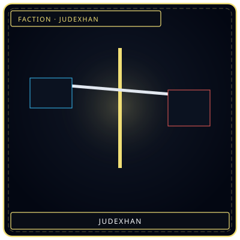
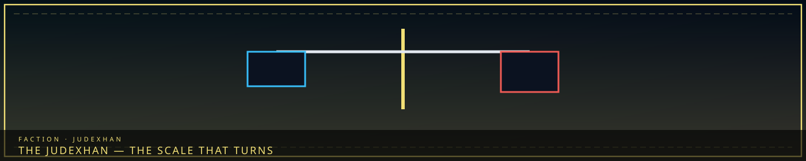

ScaleTurning beam
/// RAPID JUMP:
STATUS: ARCHIVE VERIFIED |
CLEARANCE: LEVEL-4 OVERSIGHT |
PROTOCOL: REVERIE DIRECTORATE
ARTICLE
DISCUSSION
SOURCE
HISTORY
YEAR 4,238 · DAWN OF HOPE
FACTION · COUNCIL ELITE · 유덱스한
The Judexhan
“A beam that is not level. Judgment is a weight, not a face.”

 WeightWhat is weighed
WeightWhat is weighedOverview
The Judexhan (유덱스한) are the Council’s elite field agents — judgment incarnate, not Taboo clerks. Wardens hold streets and the wall. Giltong hunt the Seven Taboos. Judexhan weigh karmic debt on the battlefield and cut through it. “The city punishes the Taboo. We find the one who broke it. These are not the same job.” That quote is Giltong’s. Judexhan’s version is shorter: they do not find. They judge.
They report to the Council’s enforcement seat called The Shadow (Fourth Head in that numbering), not to the full Council table and not as a sixth civic guild. Near-total autonomy. Their own agenda. They are not on the Five Heads list (Architect, Collector, Keeper, Warden, Weaver).
Not Giltong
| Axis | Giltong | Judexhan |
|---|---|---|
| Domain | The Seven Taboos | General judgment, high-priority enforcement |
| Authority | Independent, full Council | The Shadow only |
| Method | Detect, contain, correct | Weigh, judge, cut |
| Tools | Taboo Scanner, Containment Bonds, Arbiter | Judgment Blade, forehead implant |
| Temperament | Investigators — patient, archival | Executioners — swift |
Rivalry from overlapping authority. Mutual respect: Judexhan have pulled Giltong out of critical ops; Giltong have covered Judexhan work that skirted a Taboo. The Arbiter is a retired Judexhan — implant out, memory partly restored — the only person who has stood on both sides. See Giltong and Taboos.
Blade and implant
Judgment Blade (심판의 칼): crystallized judgment. Cuts Veil, entity shield, sorrow armor. Hits the debt-heavy harder. Drinks sorrow and gets heavier. Rejects a wielder who still owes. The grain records every judgment.
Han-crystal implant: forehead, visible, pulsing. Command net, speed, endurance, drinks target sorrow, suppresses the wielder’s feeling. The crystal counts. At capacity the Judexhan is retired — taken deep under the Alpha Tree. Source does not say what happens next. A Judexhan who hesitates is already past the implant’s purpose; one who enjoys the count is why the Arbiter exists. Citizens rarely know the word. They know the light, and they step aside.
When they deploy
When Wardens fall, Judexhan deploy. Facility emergency, Desolate incursion, a Head who will not sit for Giltong — The Shadow sends a blade, not a scanner. They have no Zone C spire. Resonance table does not give them an eighth note; implant is not Weight. Retired members go under the Tree; the Arbiter is the only one who came back with the implant out. Tools also listed on faction technology.